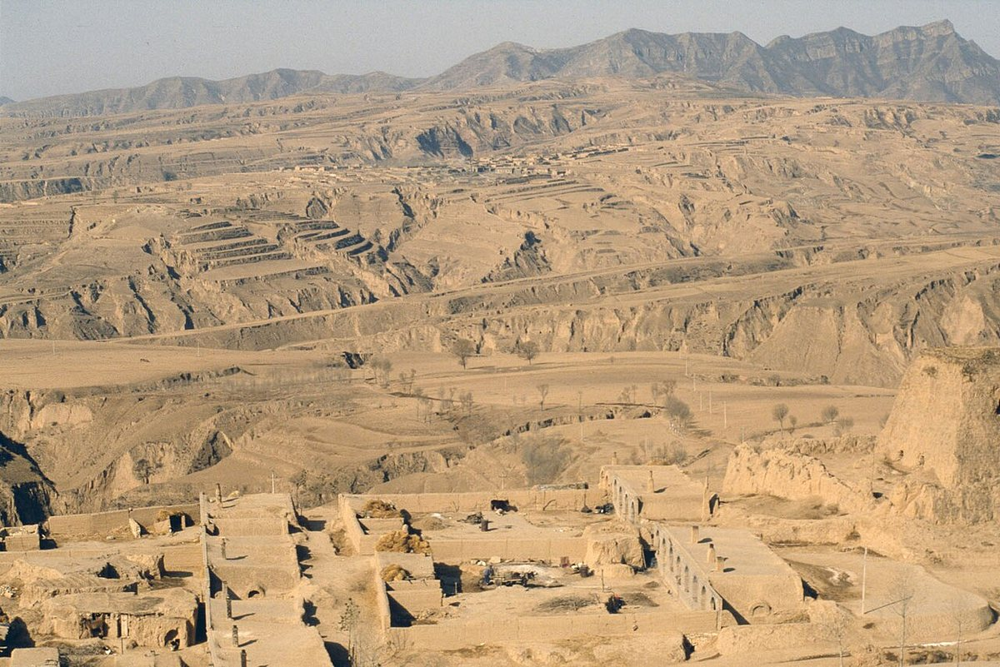

Guangzhou Institute of Geochemistry · Shangchen dating and stratigraphy ↗
The institute account shows the locality, the loess section and representative artifacts.
Deep dives / Asia
At Shangchen in central China, stone artifacts recur in thick windblown sediments and fossil soils. The oldest reported tool-bearing level places hominins far to the east of Africa very early in the archaeological record.
The map shows the Shangchen locality near Lantian in Shaanxi, on the southern Chinese Loess Plateau.

Approximate public research locality on a modern terrain map.
Researchers reported stone tools from 17 horizons, including detached flakes and cores. Sediment accumulated through repeated cycles of windblown dust deposition and soil formation. The finds preserve hominin activity at distinct times across that sequence. [2]
Magnetic minerals retain information about the polarity of Earth’s field when sediments formed. At Shangchen, polarity changes and regional correlations assign the oldest artifact-bearing beds to about 2.12 million years ago. Other levels extend the record forward to roughly 1.26 million years ago. [1] [2]
The excavated artifacts establish an early hominin presence at the locality. Without identified hominin fossils in the tool-bearing levels, the species remains uncertain. The Dmanisi sequence in Georgia provides a younger independent record with both artifacts and fossil hominins. [1] [3]
Placing Shangchen, Chinese Loess Plateau in human-family chronology depends on bracketing stratified volcanic ash layers (40Ar/39Ar), cosmogenic nuclide burial ages, or paleomagnetic reversals above and below the artifact or footprint horizon rather than dating stone flakes in isolation. Reworking, fluvial transport, and cut-mark/percussion equifinality remain key variables evaluated in every new study. [1] [2]
Rather than identifying a single exclusive ancestor, this locality serves as a tightly constrained chronological anchor that must be compared side-by-side with contemporary Rift, southern, north African, and Eurasian finds inside the playable Human Family map. [1]
| Anchor Locality | Published Age Horizon | Primary Evidence Signature | Key Research Limitation | Sources |
|---|---|---|---|---|
| Shangchen, Chinese Loess Plateau | Earliest layer about 2.12 Ma | Artifact horizons in windblown sediment and ancient soils near Lantian. | The map shows the Shangchen locality near Lantian in Shaanxi, on the southern Chinese Loess Plateau. | [1] [2] |
Open the source maps for their original detail, legends and dates. Their coverage and reproduction terms belong to the issuing institution.
The institute account shows the locality, the loess section and representative artifacts.
Open this era on global Explore ↗ Open Asia atlas ↗ Climate, sea level & ice-sheet context ↗
Sources checked and linked above; geological and historical dating methods follow the primary papers.